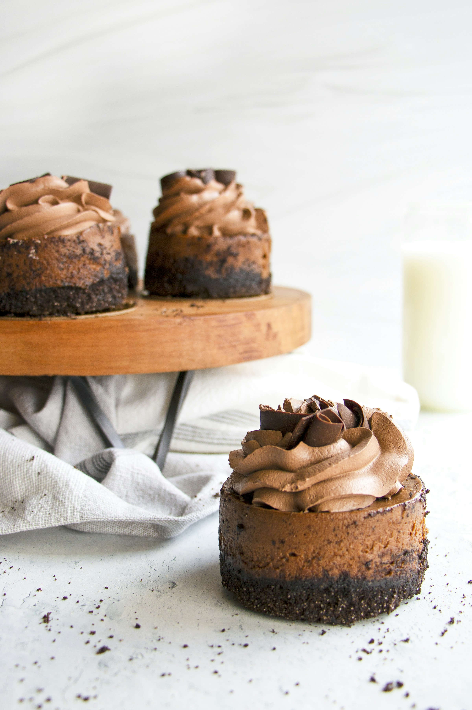

Chocolate Cupcakes
Home

Rich, fluffy chocolate cupcakes made with cocoa powder and topped with a smooth, decadent chocolate frosting. They’re easy to make, deeply chocolatey, and perfect for birthdays, cravings, or dramatic late-night baking decisions.
These chocolate cupcakes start with a soft, moist batter made from cocoa powder, sugar, and a touch of milk to keep things tender. The cupcakes bake into light but chocolate-forward little sponges, with a fine crumb that holds up beautifully under frosting.
The chocolate frosting is creamy, silky, and unapologetically indulgent. Made with butter, powdered sugar, and melted chocolate or cocoa, it spreads or pipes easily and sets just enough to feel luxurious without being stiff. Together, cupcake and frosting strike a balance between comforting and indulgent, like a hug that also contains chocolate.
Ingredients
Chocolate cupcakes
- 125 g all-purpose flour
- 40 g unsweetened cocoa powder
- 150 g sugar
- 1 tsp baking powder
- ½ tsp baking soda
- ¼ tsp salt
- 1 large egg
- 120 ml milk
- 80 ml vegetable oil
- 1 tsp vanilla extract
- 120 ml hot water or hot coffee
Chocolate frosting
- 150 g unsalted butter, softened
- 250 g powdered sugar
- 30 g unsweetened cocoa powder
- 2-3 tbsp milk or cream
- 1 tsp vanilla extract
- pinch of salt
Steps
Chocolate cupcakes
- Preheat the oven to 180°C and line a muffin tin with cupcake liners.
- Mix dry ingredients: In a bowl, whisk together flour, cocoa powder, sugar, baking powder, baking soda, and salt.
- Add wet ingredients: Add the egg, milk, oil, and vanilla. Mix until just combined.
- Add hot liquid: Slowly pour in the hot water or coffee while mixing. The batter will be thin. That’s correct, don’t panic.
- Fill liners about two-thirds full with batter.
- Bake for 18–22 minutes, or until a toothpick inserted in the center comes out clean.
- Cool completely on a rack before frosting.
Chocolate frosting
- Beat the butter until soft and creamy.
- Add powdered sugar and cocoa powder gradually, mixing well.
- Add milk, vanilla, and salt, then beat until smooth and fluffy.
- Frost the cooled cupcakes using a knife or piping bag.